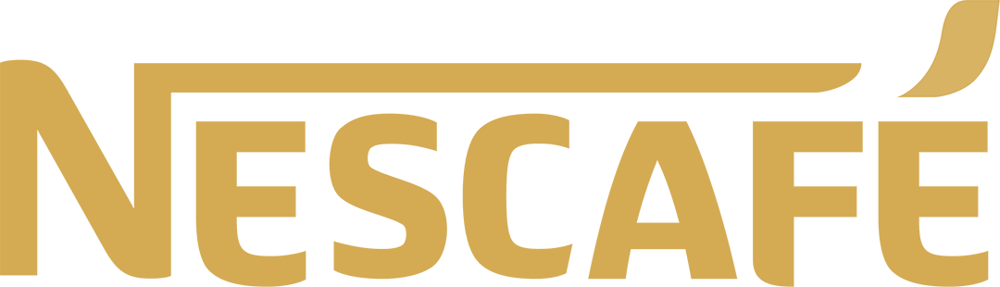
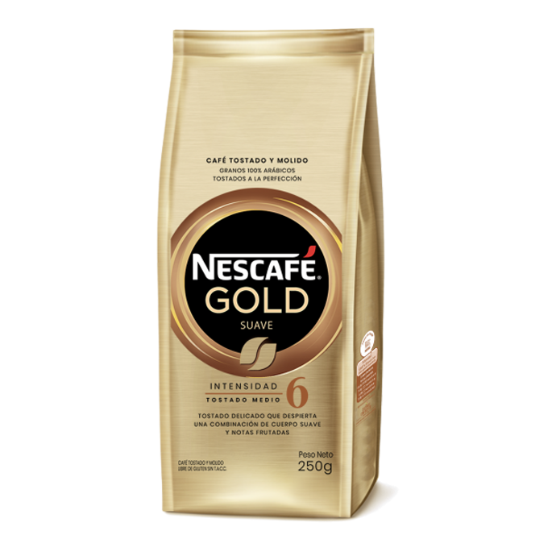
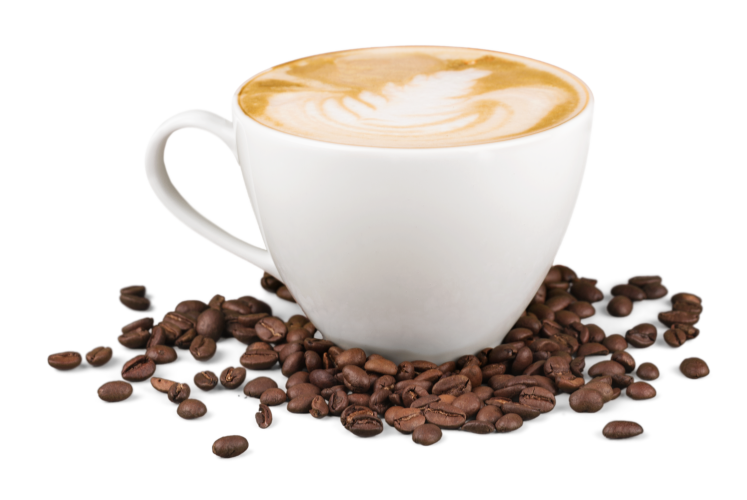

GOLD EQUILIBRADO
CAFE MOLIDO
INTENSIDAD 8
TOSTADO MEDIO


Un café sofisticado que busca la perfección, tostado en una combinación de tiempo y temperatura equilibrados, con un cuerpo denso y una textura cremosa de granos 100% arábicos.
NESCAFÉ GOLD Tostado & Molido (Equilibrado) es el resultado de combinaciones únicas de granos nobles, 100% arábicos, tostados a la perfección por nuestros maestros tostadores.